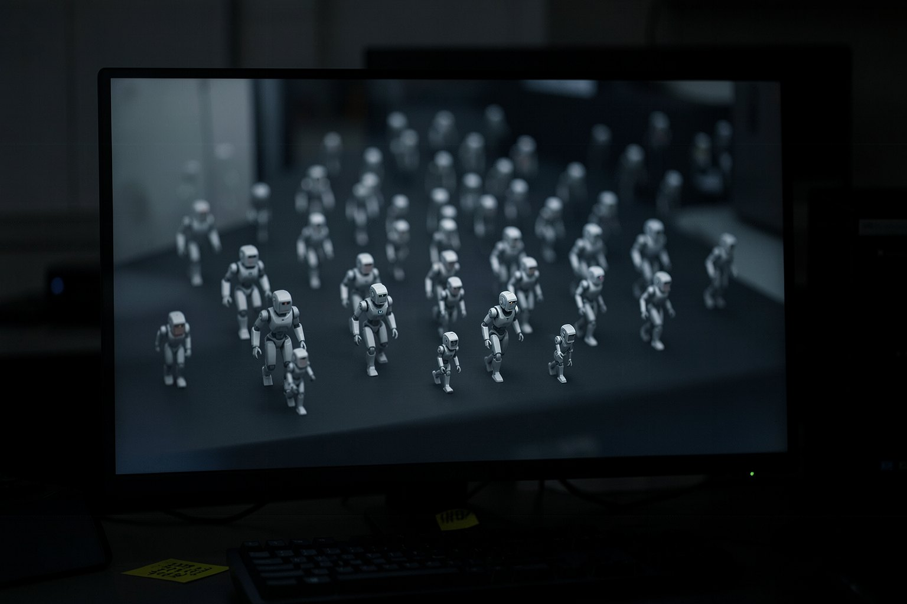
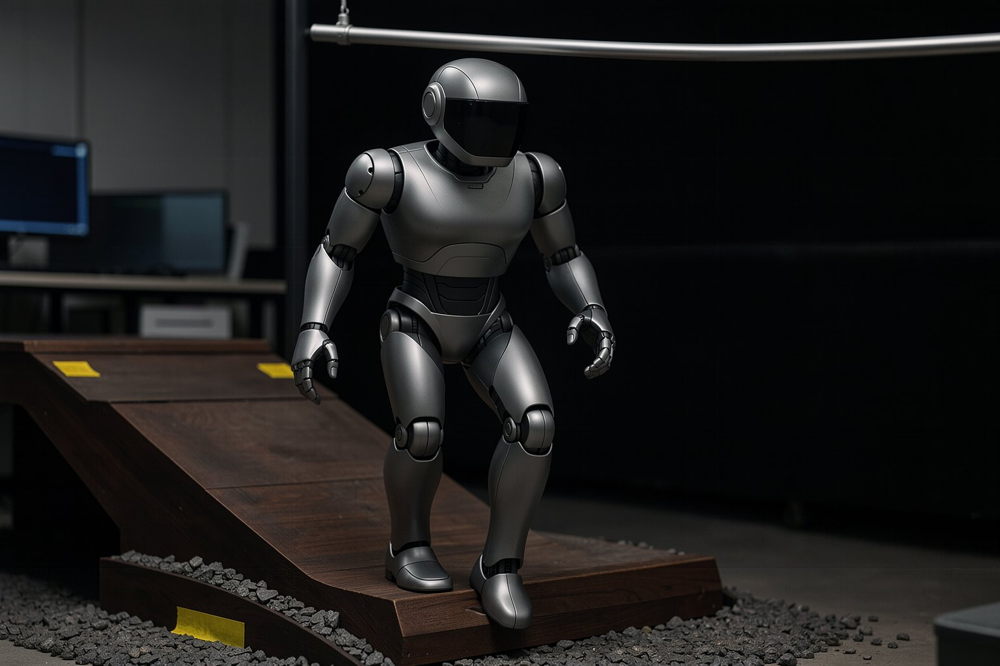

FTH — Formação Tecnológica em Humanoides · curso 1 de 5 · 8 aulas
Ensinar a andar: locomoção por RL em simulação
O Unitree G1 anda porque uma política aprendida manda 29 alvos de junta a cada 20 ms. Em oito aulas você roda uma política pronta, ajusta o PD, monta o ambiente, lê a recompensa termo a termo, treina PPO em CPU, lê as curvas, avalia com empurrão e escreve o seu plano de treino.

- 8aulas
- 128minutos de aula
- 24exercícios com "pronto quando"
- 20/20episódios de pé com empurrão (política pronta)
As aulas
Da política pronta ao seu plano de treino: PD nas juntas, ambiente, recompensa, PPO, curvas, avaliação e currículo de terreno.
 Aula 1 · 16 minPor que a locomoção virou RLO Unitree G1 deste curso anda porque uma rede neural manda 29 alvos de junta a cada 20 ms. Nesta aula você monta a bancada, roda a política de marcha pronta do Unitree G1 no MuJoCo, vê o mesmo robô cair sem ela e entende por que o controle clássico deu lugar ao RL em simulação massiva.
Aula 1 · 16 minPor que a locomoção virou RLO Unitree G1 deste curso anda porque uma rede neural manda 29 alvos de junta a cada 20 ms. Nesta aula você monta a bancada, roda a política de marcha pronta do Unitree G1 no MuJoCo, vê o mesmo robô cair sem ela e entende por que o controle clássico deu lugar ao RL em simulação massiva. Aula 2 · 16 minA camada de baixo: controle PD nas juntasEntre a política e o motor existe um controlador PD por junta, com kp e kd escolhidos no treino. Nesta aula você mede a resposta de um joelho a um degrau com três valores de kd, deixa o G1 de pé só com o PD e descobre por que os ganhos da política, sozinhos, não seguram o robô.
Aula 2 · 16 minA camada de baixo: controle PD nas juntasEntre a política e o motor existe um controlador PD por junta, com kp e kd escolhidos no treino. Nesta aula você mede a resposta de um joelho a um degrau com três valores de kd, deixa o G1 de pé só com o PD e descobre por que os ganhos da política, sozinhos, não seguram o robô. Aula 3 · 16 minObservação, ação, recompensa e fim de episódioAntes de treinar, o problema precisa virar um ambiente: o que a política vê, o que ela manda, quanto ganha e quando o episódio acaba. Nesta aula você lê as quatro partes no formato "manager-based" do Isaac Lab e do mjlab, numa versão mínima em MuJoCo puro, e roda um episódio com três políticas diferentes.
Aula 3 · 16 minObservação, ação, recompensa e fim de episódioAntes de treinar, o problema precisa virar um ambiente: o que a política vê, o que ela manda, quanto ganha e quando o episódio acaba. Nesta aula você lê as quatro partes no formato "manager-based" do Isaac Lab e do mjlab, numa versão mínima em MuJoCo puro, e roda um episódio com três políticas diferentes.- Aula 4 · 16 minDesenhar a recompensa de marchaA política aprende o que a recompensa paga, não o que você quis dizer. Nesta aula você lê os termos de marcha da tarefa de velocidade do mjlab, grava um rollout andando e outro parado, mede quanto cada termo pagou e descobre que, com um peso trocado, ficar parado passa a valer mais do que andar.

Aula 5 · 16 minPPO com milhares de robôs em paraleloO algoritmo que treina quase toda marcha de humanoide hoje é o PPO, rodando milhares de cópias do robô na GPU. Nesta aula você entende o laço coletar, estimar e atualizar, roda um PPO de ~120 linhas com os valores do mjlab em CPU, com 16 robôs, e vê o comando que faz o mesmo com 4.096. Aula 6 · 16 minLer o treino: curvas, colapso e recompensa hackeadaUma curva de recompensa subindo não quer dizer que o robô aprendeu a andar. Nesta aula você lê o log do seu treino e de dois treinos reais de 150 iterações, gravados para o curso: num deles a recompensa sobe porque o robô aprendeu a cair mais cedo. O outro mostra o conserto e o limite do conserto.
Aula 6 · 16 minLer o treino: curvas, colapso e recompensa hackeadaUma curva de recompensa subindo não quer dizer que o robô aprendeu a andar. Nesta aula você lê o log do seu treino e de dois treinos reais de 150 iterações, gravados para o curso: num deles a recompensa sobe porque o robô aprendeu a cair mais cedo. O outro mostra o conserto e o limite do conserto. Aula 7 · 16 minAvaliar de verdade: velocidade, curva e empurrãoUma política só está pronta quando passa num teste que você escreveu antes de olhar o resultado. Nesta aula você avalia a política pronta em 20 episódios com sementes fixas: erro de velocidade, curva e empurrão de 1,0, 1,5 e 2,0 m/s. Depois passa o seu checkpoint da aula 5 pelo mesmo teste.
Aula 7 · 16 minAvaliar de verdade: velocidade, curva e empurrãoUma política só está pronta quando passa num teste que você escreveu antes de olhar o resultado. Nesta aula você avalia a política pronta em 20 episódios com sementes fixas: erro de velocidade, curva e empurrão de 1,0, 1,5 e 2,0 m/s. Depois passa o seu checkpoint da aula 5 pelo mesmo teste.
Aula 8 · 16 minCurrículo de terreno e o seu plano de treinoNinguém treina marcha em escada no primeiro dia: o terreno e a velocidade pedida crescem conforme a política acerta. Nesta aula você mede até que degrau a política pronta vai, lê como o mjlab e o unitree_rl_lab sobem de nível, e escreve o seu plano de treino num arquivo que um script confere.
Para quem é
- 1Quem programa em Python, já viu ROS 2 (ou fez o curso robot) e quer entender como um humanoide aprende a andar.
- 2Quem não tem humanoide nem GPU: todas as práticas rodam em CPU, em minutos, no MuJoCo.
- 3Quem fez o curso 0 (bancada ~/fth): este curso reaproveita o venv e o Menagerie.
O que você sai fazendo
- 1Rodar a política de marcha do G1 no MuJoCo e medir o que ela faz.
- 2Ler cada termo da recompensa de marcha num rollout gravado e prever o efeito de um peso.
- 3Treinar PPO em CPU, ler as curvas e reconhecer recompensa hackeada.
- 4Avaliar com empurrão e degrau, e escrever um plano de treino que um script confere.